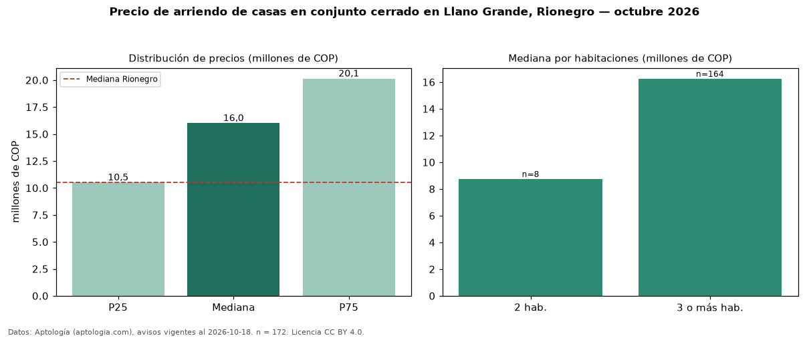

Precio de arriendo de casas en conjunto cerrado en Llano Grande, Rionegro — octubre 2026
COP 16 millones al mes es el canon mediano de casas en conjunto cerrado en arriendo en Llano Grande, Rionegro (n = 172 avisos). Frente a la mediana de todas las casas en arriendo de Llano Grande (COP 15 millones, n = 296), queda 7 % por encima; este segmento reúne el 58 % de esos avisos. Por metro cuadrado, la mediana es COP 41.486/m² al mes (n = 168), 0 % por encima del conjunto de referencia (COP 41.304/m²). El área mediana anunciada es 365 m². El segmento con más oferta es el de 3 o más habitaciones (164 avisos, mediana COP 16,25 millones); pasar de 2 habitaciones a 3 o más habitaciones cambia la mediana +86 %. La administración mediana declarada es COP 850.000 al mes (n = 37), aparte del canon. La mitad central de los avisos va de COP 10,50 millones a COP 20,12 millones (razón 1,9), una dispersión moderada. El estrato más frecuente es 5 (47 % de los avisos con estrato). Datos: Aptología (aptologia.com), CC BY 4.0 — https://www.aptologia.com/arriendo/rionegro. Archivos: PDF, CSV con las cifras y gráfica PNG.

| Avisos únicos | 172 |
|---|---|
| Percentil 25 | COP 10.500.000 |
| Mediana | COP 16.000.000 |
| Percentil 75 | COP 20.125.000 |
| Mediana por m² | COP 41.485 |
Fuente: avisos vigentes de portales inmobiliarios recopilados por Aptología, deduplicados (mínimo 30 avisos únicos por celda). Precios pedidos, no cerrados. Fecha: 2026-10-18.